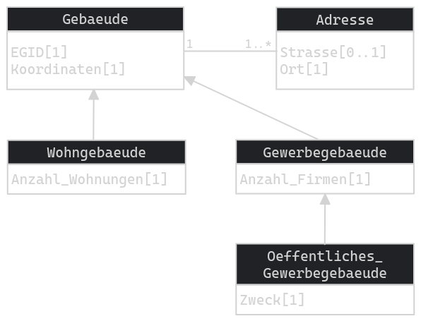

<!-- .slide: data-background="./assets/title.png" --> <h1 style="color: var(--opengisch-dark) !important; font-size:1.5em !important; text-align: center !important;">Workshop Zürich - 14. März 2025</h1>  <br><br><br><br><br><br> <!-- .slide: data-background="assets/title.png" --> --- Let's start ... # Was machen wir heute? --v-- <h1 style="-webkit-text-stroke: 2px var(--opengisch-light) !important; color: steelblue !important;">Dave Signer</h1> ## BSc in IT(SE) @ ZHAW ### Software Engineer and Architect <h3 style=" color: lightgrey !important;">Teacher and Storyteller</h1> <aside class="notes"> - Senior Developer / QGIS Core und Plugin Entwickler - Consultant auch im INTERLIS Bereich - Tech Officer (nicht C aber TO) </aside> --v-- <h1 style="-webkit-text-stroke: 2px var(--opengisch-light) !important; color: steelblue !important;">Wer seid ihr?</h1> - Woher bin ich? - Was arbeite ich hauptsächlich? - Ich bin **Model Baker ...** : - A. **... Zero**: Was ist Model Baker? - B. **... User**: Hab ich schon mal Projekte erstellt - C. **... Hero**: Schon mit Baskets / Validierung etc. gearbeitet --v-- ### Ziele des Workshops - INTERLIS Modelle in der Datenbank abbilden und Daten importieren / exportieren / validieren - In QGIS mit Behältern und OIDs arbeiten können - Wissen was Metaattribute und Vererbungsstrategien etc. sind --v-- ### Programm (1) |Zeit| Inhalt | |-----| ------------------------------- | |09.00| Einführung und Umgebung 🧑🏫 | |10.00| Modell Import 👪 | |10.30| Metaattribute 🧑🏫 💻 | |11.00| Pause | |11.15| Vererbungen und Abbildung 🧑🏫 💻 | |12.00| Zmittag | --v-- ### Programm (2) |Zeit| Inhalt | |-----| ------------------------------ | |13.00| Daten Import und Export 👪<br>Behälter und Datasets 🧑🏫 💻 | |13.45| Erfassung und Validierung 👪 💻 | |15.15| Pause | |15.30| UsabILIty Hub 🧑🏫 👪 💻 | |16.30| Übersetzungsmodelle 🧑🏫 | |16.45| Abschluss, Fragen und Anregungen | --v-- Kurze Einführung... # Was ist Model Baker? --v-- ## Ein QGIS Projektgenerator Schnelles **Erstellen eines QGIS-Projekts** aus einem physischen Datenmodell. Analysiert die vorhandene Struktur und konfiguriert ein QGIS-Projekt mit allen verfügbaren Informationen. --v-- ## Ein für *INTERLIS* optimierter QGIS Projektgenerator In INTERLIS definierte Modelle bieten **zusätzliche Metainformationen** wie Domänen, Einheiten von Attributen oder objektorientierte Definitionen von Tabellen. Diese können genutzt werden, um die Projektkonfiguration weiter zu optimieren. <!-- Model Baker kann die Meta-Informationen nutzen, um den Layertree, Feld-Widgets mit Bedingungen, Formular-Layouts, Relationen und vieles mehr zu konfigurieren.--> --v-- ## Eine ili2db Kontrollstation ``` java -jar /home/dave/dev/opengisch/QgisModelBaker/QgisModelBaker/libili2db/bin/ili2pg-4.6.1/ili2pg-4.6.1.jar --schemaimport --dbhost localhost --dbport 5432 --dbusr postgres --dbpwd ****** --dbdatabase bakery --dbschema adsfdsaf2 --setupPgExt --coalesceCatalogueRef --createEnumTabs --createNumChecks --createUnique --createFk --createFkIdx --coalesceMultiSurface --coalesceMultiLine --coalesceMultiPoint --coalesceArray --beautifyEnumDispName --createGeomIdx --createMetaInfo --expandMultilingual --createTypeConstraint --createEnumTabsWithId --createTidCol --importTid --smart2Inheritance --strokeArcs --defaultSrsCode 2056 --models Wildruhezonen_LV95_V2_1 ``` <!-- Es stellt dem Benutzer nur die notwendigen Einstellungen zur Verfügung, um Parameter an die ili2db zu übergeben. Erzeugt das Kommando für ili2db. --> --v-- ## Und es ist eine Library Kann als Framework genutzt werden. So wie [Asistente LADM-COL](https://github.com/SwissTierrasColombia/Asistente-LADM-COL) es tut. <!--erstellt für die [Kolumbianische Implementierung des Land Administration Domain Model (LADM)](https://www.proadmintierra.info/) --> ... und ist auch als Python Package verfügbar: ```none pip install modelbaker ``` --- # Wo finde ich was? --v-- ## Code Repositories **QGIS Plugin** https://github.com/opengisch/QgisModelBaker **Code Repository Backend Library** https://github.com/opengisch/QgisModelBakerLibrary --v-- ## Bug Reports und Feature Requests https://github.com/opengisch/QgisModelBaker/issues - Nachschauen - Erfassen - Beschreibung des Problems - Zusätzliche Infos - Warten oder finanzieren 😉 <!-- - Nachschauen - ob jemand dasselbe Problem schon hatte - Erfassen - GitHub-Konto nötig (kostenlos) - Beschreibung des Problems - wenn möglich in Englisch, Deutsch geht aber auch - Zusätzliche Infos - Mit Printscreens oder Bildschirmaufzeichnung als GIF dokumentieren und falls möglich Beispieldaten --> --v-- ## Dokumentation  #### [modelbaker.ch](https://modelbaker.ch) #### [opengisch.github.io/QgisModelBaker](https://opengisch.github.io/QgisModelBaker) --- Was wir alles brauchen... # Umgebung --v-- ## INTERNET #### Name: #### Code: SDS1570 #### Pad: https://pad.opengis.ch --v-- ## QGIS und Datenbanken - QGIS 3.34 oder höher - PostgreSQL + PostGIS - Geopackage möglich --v-- ### Extensions mit PgAdmin - Extension hinzufügen: - `postgis` - `uuid-ossp`  <!-- + Datenbank erstellen --> --v-- ### Extensions mit PSQL-Client ```none $ psql -Upostgres -hlocalhost -dbakery postgres=# CREATE DATABASE databasename; postgres=# \connect databasename; databasename=# CREATE EXTENSION postgis; databasename=# CREATE EXTENSION uuid-ossp; ``` --v-- Falls es nicht schon installiert ist... ### PostGIS Installation #### Windows https://postgis.net/install/ Dort je nach PostgreSQL Verision `postgis-bundle-pg14x64-setup-3.3.2-2.exe` finden, downloaden und installieren. #### Mac Vorzugsweise **posgres.app** nutzen (dort ist PostGIS bereits drin) https://postgresapp.com/de/downloads.html #### Linux ```none sudo apt install postgis ``` --v-- ## OPENGIS.ch PostgreSQL <!-- Falls keine PostgreSQL Instanz lokal, kann online auf eine Test-DB verbunden werden (nur heute aktiv)--> ||| |-----| ------------------------------- | |Host| modelbaker-workshop-exoscale-d9c1bf3f-51a3-4ab8-afac-6cb37d8a8f.e.aivencloud.com | |Port| 21699 | |User| testbaker | |Passwort| testbaker | |DB| bakery | (nur heute aktiv) Verwende für die Schemas immer als Prefix deinen Namenskürzel: ``` sigdav_ (für David Signer) ``` --v-- ## Java Habe ich Java installiert? ```none java --version ``` ... kommt etwas, dann gut ist ☕ ###### Download für Windows / Mac Hier https://adoptium.net/de/ ##### Oder in Linux (openJDK) ```none sudo apt-get install openjdk-18-jre ``` or ``` sudo apt install default-jre ``` --v-- ## Demodaten Download ### Link: urli.info/WjWu --v-- ## Nutzdaten ### https://geodienste.ch/ - **Kataster der belasteten Standorte** - Spezifikation - Version 1.5 - AtomFeed + OpenSearch Download-Dienst - Download von **SH** und **TG** --v-- ## QGIS Model Baker - Installiere Model Baker - Installiere Swiss Locator --v-- ## Ready to go 🚀 Lasst uns beginnen... --- # Exkurse ... lasst uns abschweifen --v-- ## Exkurs 1: Metaattribute --v-- ### Was sind Metaattribute? Metaattribute erlauben eine Ergänzung der INTERLIS-Modelle mit **zusätzlichen Angaben**, die in der aktuellen Spezifikation von INTERLIS **nicht vorgesehen** sind. *Siehe [eCH-0117 Meta-Attribute für INTERLIS-Modelle](https://ech.ch/de/ech/ech-0117/1.0)* <!-- Es handelt sich dabei um eine spezielle Form eines Zeilenkommentars, der, an bestimmten Stellen im Datenmodell angebracht, zusätzliche Metainformationen zum Modell mitliefert.--> --v-- ### Beispiel mit Model Baker (1) Spezifische Display Expression für die Tabelle der Klasse `ZustaendigkeitsKataster`.  --v-- ### Syntax im INTERLIS Modell ```none !!@<name>=<value> ``` Gefolgt vom referenzierten Element (MODEL, TOPIC, CLASS etc.) --v-- ### Metaattribute vs. Kommentar Ein Kommentar startet mit `!!` und endet mit einem Zeilenende. Ein Metaattribut startet ebenso mit `!!` aber gefolgt von `@` --v-- ### Beispiel mit Model Baker (2) Model Baker spezifisches Metaattribut: ```none !!@qgis.modelbaker.dispExpression='<QGIS Expression>' ``` --v-- ### Beispiel mit Model Baker (3) Definition in Modell **KbS_V1_5** <pre><code class="plaintext" data-line-numbers="5|5,6">MODEL KbS_V1_5 (de) = TOPIC Belastete_Standorte = !!@qgis.modelbaker.dispExpression = "'Nr: '|| uid ||' / '|| katastername" CLASS ZustaendigkeitKataster = [...] </pre></code>  --v-- ### Listen von Metaattributen - [INTERLIS Compiler (ili2c) ](https://github.com/claeis/ili2c/blob/master/doc/ili2c.rst#interlis-metaattribute) - [ili2db ](https://github.com/claeis/ili2db/blob/master/docs/ili2db.rst#interlis-metaattribute) - [INTERLIS Validator (ilivalidator) ](https://github.com/claeis/ilivalidator/blob/master/docs/ilivalidator.rst#interlis-metaattribute) - [INTERLIS Manager (ilimanager) ](https://github.com/claeis/ilimanager/blob/main/docs/ilimanager.rst#interlis-metaattribute) - [QGIS Model Baker ](https://opengisch.github.io/QgisModelBaker/background_info/meta_attributes/) *(unvollständig) Siehe auch https://interlis.discourse.group/t/uebersicht-interlis-meta-attribute/70* --v-- ### Metaattribute im Modell sind toll Aber wir können doch nicht einfach am Modell rumbasteln! --v-- ### Extra Meta Attribute File ... a.k.a. "Konfigfile", "Metaattributefile", "INI-File", "TOML-File"... <!-- Meistens kann man das Modell selbst nicht anpassen --> ***Eigentlich im Format INI aber wird meistens als `.toml` gespeichert.*** Nicht zu verwechseln mit ***Meta-Konfigurationsdatei*** um ili2db zu "steuern" (auch im Zusammenhang mit UsabILIty Hub). --v-- #### Beispiel mit Model Baker Definition in Konfigurationsdatei für **KbS_V1_5** ```INI ["KbS_V1_5.Belastete_Standorte.ZustaendigketKataster"] qgis.modelbaker.dispExpression = "'Nr: '|| uid ||' / '||katastername" ```  --v-- ### Validierungen steuern mit Metaattributen Nur zur Info... ```ini ["KbS_V1_5.Standorte.Belasteter_Standort.Nr"] # disable mandatory constraint of Katasternummer multiplicity="off" ["KbS_V1_5.Standorte.Belasteter_Standort.Constraint1"] msg = "Mind. eine Untersuchungsmassnahme erfassen." ``` --v-- ### Was brauchen wir für KbS_V1_5? - Multigeometrie konstruiert aus `STRUCTURE MultiPolygon` - "Plattgewalzte Mehrsprachigkeit" auf `STRUCTURE MultilingualUri` --v-- #### Das Mapping-Attribut `ili2db.mapping` - Auf Klasse oder Struktur *Strukturen werden anstatt mit Beziehungen mit Spalten abgebildet (zBs. Multi-Geometrie).* - Auf Attribut *Strukturattribute (`BAG OF`/`LIST OF`) werden anstatt mit Beziehungen mit einem Datentyp abgebildet.* <!-- Zeige was wir haben. --> --v-- #### Definition im INTERLIS Modell <pre><code class="plaintext" data-line-numbers="1-4|6-10">!!@ili2db.mapping=MultiSurface STRUCTURE MultiPolygon = Polygones: BAG {1..*} OF PolygonStructure; END MultiPolygon; !!@ili2db.mapping=Multilingual STRUCTURE MultilingualUri = LocalisedText : BAG {1..*} OF LocalisedUri; UNIQUE (LOCAL) LocalisedText: Language; END MultilingualUri; </pre></code> --v-- #### Definition im Extra Meta Attribute File ```INI [KbS_V1_5.Belastete_Standorte.MultiPolygon] ili2db.mapping = "MultiSurface" [KbS_V1_5.Belastete_Standorte.MultilingualUri] ili2db.mapping = "Multilingual" ``` --v-- ## Ready für Übung 1 🚀 --v-- ## Exkurs 2.1: Vererbungen in INTERLIS --v-- ### Use Case: Arbeiten mit KbS_V1_5 ```mermaid %%{init: {'theme': 'dark' } }%% sequenceDiagram participant A as Bund participant E as Kanton Note left of A: Definiert ein <br>Minimales Geo-Daten Modell<br/>KbS_V1_5 A ->>+E: gibt Modell vor Note right of E: Sammelt Daten im Format von<br/>KbS_V1_5 Note right of E: Validiert Daten im Format von<br/>KbS_V1_5 E ->>-A: Liefert Daten im Format von<br/>KbS_V1_5 Note left of A: Validiert Daten im Format von<br/>KbS_V1_5 ``` --v-- ### Use Case: Arbeiten mit Erweiterung ```mermaid %%{init: {'theme': 'dark' } }%% sequenceDiagram participant A as Bund participant E as Kanton Note left of A: Definiert ein <br>Minimales Geo-Daten Modell<br/>KbS_V1_5 A ->>+E: gibt Modell vor Note right of E: Definiert Modell mit zusätzlichen Informationen<br/>KT_KbS_V1_5 Note right of E: Sammelt Daten im Format von<br/>KT_KbS_V1_5 Note right of E: Validiert Daten im Format von<br/>KT_KbS_V1_5 E ->>-A: Liefert Daten im Format von<br/>KbS_V1_5 Note left of A: Validiert Daten im Format von<br/>KbS_V1_5 ``` --v-- ### Einfacheres Beispiel `Gebaeudeinventar_V1` <pre><code class="plaintext" data-line-numbers="1-25|1|6|8-11|13-21|8-11">MODEL Gebaeudeinventar_V1 (de) AT "mailto:signedav@localhost" VERSION "2023-01-19" = IMPORTS GeometryCHLV95_V1; TOPIC Gebaeude = CLASS Gebaeude = EGID : MANDATORY TEXT*16; Koordinaten : MANDATORY GeometryCHLV95_V1.Coord2; END Gebaeude; CLASS Adresse = Strasse : TEXT*200; Ort : MANDATORY TEXT*200; END Adresse; ASSOCIATION AdresseGebaeude = GebaeudeAdresse -- {1..*} Adresse; Gebaeude -- {1} Gebaeude; END AdresseGebaeude; END Gebaeude; END Gebaeudeinventar_V1. </code></pre> --v-- ### Wir brauchen "mehr" Müssen für ein Öko-Projekt ein weiteres Attribut verwenden: `EntsprichtStandard` Möchten aber dennoch die Daten als `Gebaeudeinventar_V1` zurückliefern. --v-- ### Use Case: Öko-Projekt ```mermaid %%{init: {'theme': 'dark' } }%% sequenceDiagram participant A as Initialprojekt participant E as Öko-Projekt Note left of A: Gegebenes Modell<br/>Gebauedeinventar_V1 A ->>+E: nutzen Basismodell Note right of E: Definieren Modell mit zusätzlichem Attribut<br/>OekoGebaeudeinventar_V1 Note right of E: Sammeln Daten im Format von<br/>OekoGebaeudeinventar_V1 Note right of E: Validieren Daten im Format von<br/>OekoGebaeudeinventar_V1 E ->>-A: Exportieren Daten im <br/>Gebauedeinventar_V1 Note left of A: Validiert Daten im Format von<br/>Gebauedeinventar_V1 ``` --v-- ### Wie "vererben" wir? **Erweitern** einer Klasse (Basisklasse) in eine "verbesserte" Ableitung. Eine erweiterte Klasse (Ableitung) hat **alle Eigenschaften** der Basisklasse **+ "mehr"**. **"mehr"** heisst zusätzliche **Attribute** und **Beschränkungen**. --v-- ### Aus `Gebaeude` wird ein besseres `Gebaeude` <!-- Darstellung kacke: ```mermaid %%{init: {'theme': 'dark' } }%% erDiagram Gebaeude{ number EGID geom Geometry } "Gebaeude "{ number EGID geom Geometry bool EntsprichtStandard } ``` -->  <!-- Siehe https://excalidraw.com/#json=MqzGNX2n1TRK8hONq2eF0,yitcCXCkDaRX6eMINxU_xw--> --v-- #### Die Ableitung in INTERLIS (1) ...mit `EXTENDED` <pre><code class="plaintext" data-line-numbers="1-4">CLASS Gebaeude = EGID : MANDATORY TEXT*16; Koordinaten : MANDATORY GeometryCHLV95_V1.Coord2; END Gebaeude; </code></pre> <pre><code class="plaintext" data-line-numbers="1,3|2">CLASS Gebaeude (EXTENDED) = EntsprichtStandard: BOOLEAN; END Gebaeude; </code></pre> --v-- ### Und schon haben wir es! ```mermaid %%{init: {'theme': 'dark' } }%% sequenceDiagram participant A as Initialprojekt participant E as Öko-Projekt Note left of A: Gegebenes Modell<br/>Gebauedeinventar_V1 A ->>+E: nutzen Basismodell Note right of E: Definieren Modell mit zusätzlichem Attribut<br/>OekoGebaeudeinventar_V1 Note right of E: Sammeln Daten im Format von<br/>OekoGebaeudeinventar_V1 Note right of E: Validieren Daten im Format von<br/>OekoGebaeudeinventar_V1 E ->>-A: Exportieren Daten im <br/>Gebauedeinventar_V1 Note left of A: Validiert Daten im Format von<br/>Gebauedeinventar_V1 ``` --v-- ### Check it out! --v-- ### Doch es gibt aber noch mehr Wollen wir nun mehrere Arten von Gebäude erfassen: - Wohngebäude (mit `Anzahl_Wohnungen`) - Gewerbegebäude (mit `Anzahl_Firmen`) - Öffentliche Gewerbegebäude (mit `Anzahl_Firmen` und `Zweck`) ... und dennoch alle schlussendlich als `Gebaeude` zurückliefern. --v-- #### Die Ableitung in INTERLIS (Teil 2) ...mit `EXTENDS` <pre><code class="plaintext" data-line-numbers="1-4">CLASS Gebaeude = EGID : MANDATORY TEXT*16; Koordinaten : MANDATORY GeometryCHLV95_V1.Coord2; END Gebaeude; </code></pre> <br> <pre><code class="plaintext" data-line-numbers="1-4">CLASS Gewerbegebaeude EXTENDS Gebaeude = Anzahl_Firmen : MANDATORY 1 .. 100; END Gewerbegebaeude; </code></pre> --v-- ### Beispielmodell `MultiGebaeudeinventar_V1` <!-- https://excalidraw.com/#json=ICaNWw5qf7qzFMfPxvYZU,ooU5hP8itSR2aPfzPiOoZQ --> <p></p> --v-- #### Die Klassen in INTERLIS <pre><code class="plaintext" data-line-numbers="1|5-8|10-18|24|29-33|35-39|41-45">MODEL Gebaeudeinventar_V1 (de) = TOPIC Gebaeude = CLASS Gebaeude = EGID : MANDATORY TEXT*16; Koordinaten : MANDATORY GeometryCHLV95_V1.Coord2; END Gebaeude; CLASS Adresse = Strasse : TEXT*200; Ort : MANDATORY TEXT*200; END Adresse; ASSOCIATION AdresseGebaeude = GebaeudeAdresse -- {1..*} Adresse; Gebaeude -- {1} Gebaeude; END AdresseGebaeude; END Gebaeude; END Gebaeudeinventar_V1. MODEL MultiGebaeudeinventar_V1 (de) = IMPORTS Gebaeudeinventar_V1; TOPIC Gebaeude EXTENDS Gebaeudeinventar_V1.Gebaeude= !! First inheritance CLASS Wohngebaeude EXTENDS Gebaeude = Anzahl_Wohnungen : MANDATORY 1 .. 1000; END Wohngebaeude; !! Second inheritance CLASS Gewerbegebaeude EXTENDS Gebaeude = Anzahl_Firmen : MANDATORY 1 .. 100; END Gewerbegebaeude; !! Inheritance of first inheritance CLASS Oeffentliches_GewerbeGebaude EXTENDS Gewerbegebaeude = Zweck : MANDATORY TEXT*255; END Oeffentliches_GewerbeGebaude; END Gebaeude; END MultiGebaeudeinventar_V1. </code></pre> --v-- ## Ready für Übung 2 🚀 --v-- ## Exkurs 2.2: Physische Abbildung von Vererbungen <!-- Wie können Vererbungen physisch umgesetzt werden damit die Referentielle Integrität immer respektiert wird?--> --v-- ### Mal vornweg > Versuchs mal mit Smart2 und wenns nicht gut aussieht mit Smart1. > > ***Zitat: Romedi Filli - 2022*** <!-- und alle, die in den nächsten paar Minuten abhängen, erinnert euch an diese Zitat.--> --v-- ### Vererbungsmapping Strategien - New Class - Super Class - Sub Class - New+Sub Class --v-- #### Beispielmodell <!-- Darstellung kacke: ```mermaid %%{init: {'theme': 'dark' } }%% classDiagram Gebaeude "1" - -> "1..*" Adresse Gebaeude <|-- Wohngebaeude Gebaeude <|-- Gewerbegebaeude Gewerbegebaeude <|-- Oeffentliches_GewerbeGebaude class Gebaeude{ number EGID geom Geometry } class Adresse{ number EGID geom Geometry bool EntsprichtStandard } class Wohngebaeude{ number Anzahl_Wohnungen } class Gewerbegebaeude{ number Anzahl_Firmen } class Oeffentliches_GewerbeGebaude{ text Zweck } ``` -->  --v-- #### New Class <div class="container"> <div class="col"> ```none Gebaeude.t_type: ( Wohngebaeude, Gewerbegebaeude, Oeffentliches_ Gewerbegebaeude ) ``` - Erweiterungen sind mit Beziehungen gemappt - NOT NULL Bedingung wird eingehalten - Mehrere Imports benötigt pro Objekt </div> <div class="col" style="min-width: 400px"> <!-- not so nice to use pixel here - but I don't know currently a better sollution -->  <!--Siehe https://excalidraw.com/#json=HxHdS7H0r9l_PYLpkI9AD,IcoI6zePdRml20qWR25LWA --> </div> </div> --v-- #### Beispielmodell  --v-- #### Super Class <div class="container"> <div class="col"> ```none Gebaeude.t_type: ( Wohngebaeude, Gewerbegebaeude, Oeffentliches_ Gewerbegebaeude ) ``` - Weniger Tabellen und Beziehungen (easy to use) - NOT NULL Bedingung wird **nicht** eingehalten </div> <div class="col" style="min-width: 400px"> <!-- not so nice to use pixel here - but I don't know currently a better sollution -->  <!-- https://excalidraw.com/#json=7rPQ5AqAXGwbhCBN7IgVM,PmQqY2DcXxxEq2xTxBO8rg --> </div> </div> --v-- #### Beispielmodell  --v-- #### Sub Class <div class="container"> <div class="col"> ```none Oeffentliches_ Gewerbegebaeude.t_type: ( Gewerbegebaeude, Oeffentliches_ Gewerbegebaeude ) ``` - NOT NULL Bedingung wird **nicht** eingehalten </div> <div class="col" style="min-width: 400px"> <!-- not so nice to use pixel here - but I don't know currently a better sollution -->  <!-- https://excalidraw.com/#json=v9MmA9GwnqKVTcVeU5GPt,YdmkYmnelEJWrE9WV6-Y-g --> </div> </div> --v-- #### Beispielmodell  --v-- #### New + Sub Class <div class="container"> <div class="col"> - Keine types - IMO das erwartete Vorgehen - NOT NULL Bedingung wird eingehalten </div> <div class="col" style="min-width: 400px"> <!-- not so nice to use pixel here - but I don't know currently a better sollution -->  <!-- https://excalidraw.com/#json=TftYYPKxn6tWr96QllZlw,xySVQa_rQa1RPWioTaCiSw --> </div> </div> --v-- ### Smart Mapping in ili2db --v-- #### noSmartMapping - Alle Klassen werden mit der *New Class* Strategie gemappt. --v-- #### noSmartMapping <div class="container"> <div class="col"> Resultiert in was wir sehen in der *New Class* Grafik. </div> <div class="col" style="min-width: 200px"> <!-- not so nice to use pixel here - but I don't know currently a better sollution -->  </div> </div> --v-- #### smart1Inheritance - Abstrakte Klassen ohne Beziehungen -> *Sub Class* Strategie - Abstrakte Klassen mit Beziehungen und keiner konkreten Super Klasse -> *New Class* Strategie - Konkrete Klassen mit keiner konkreten Super Klasse -> *New Class* Strategie - Alle anderen Klassen -> *Super Class* Strategie --v-- #### smart1Inheritance <div class="container"> <div class="col"> Heisst also `Gebaeude` nutzt *New Class* und alle andern *Super Class* Strategie. Resultiert in was wir sehen in der *Super Class* Grafik. </div> <div class="col" style="min-width: 200px"> <!-- not so nice to use pixel here - but I don't know currently a better sollution -->  </div> </div> --v-- #### smart2Inheritance - Abstrakte Klassen -> *Sub Class* Strategie - Alle konkreten Klassen -> *New + Sub Class* Strategie --v-- #### smart2Inheritance <div class="container"> <div class="col"> Heisst also alle nutzen *New+Sub Class* Strategie. Resultiert in was wir sehen in der *New+Sub Class* Grafik. </div> <div class="col" style="min-width: 200px"> <!-- not so nice to use pixel here - but I don't know currently a better sollution -->  </div> </div> --v-- #### Zusammengefasst - smart 1 ↗️ - smart 2 ↘️ --v-- ## Zeit für Übung 2.1? 🚀 --v-- ## Exkurs 2.3: Projektoptimierung mit Smart2 --v-- ### Erstellen wir ein Projekt ohne Optimierung  ...probieren wirs aus mit `OekoGebaeudeinventar_V1` (oder auch `ZG_Nutzungsplanung_V1_1`) --v-- ### Problematik Wenn ein Modell bzw. Topic erweiterte Klassen enthält, werden die inklusive Basisklassen in der physischen Datenbank implementiert... ... und folglich Layer in QGIS erstellt. --v-- ### Können wir Basisklassen einfach ignorieren? <!-- Nein. Manche wollen wir sehen...--> --v-- ### Aber welche Layer wollen wir denn sehen? - Basisklassen mit gleichnamigen Erweiterungen sind ***irrelevant*** <!-- denn sonst würest du sie umbenennen...--> - Basisklassen mit mehreren Erweiterungen sind ***irrelevant*** <!-- denn du willst sie ersetzen...--> - Ausser wenn die Erweiterung im gleichen Modell ist, sind sie nicht nicht ***irrelevant*** <!-- denn sonst hättest du die Basisklasse ABSTRACT gemacht --> --v-- ### Strategien - Verstecke irrelevante Basisklassen - Gruppiere irrelevante Basisklassen - Keine: Layer werden so umbenannt, dass sie eindeutig sind --v-- ### Check it out! --v-- ## Ready for Zmittag 🍲 --v-- ## Exkurs 3: Behälter und Datasets --v-- ### Datasets - Datensätze eines bestimmten **räumlichen oder thematischen** Bereichs - **Unabhängig** des Modells (im Gegensatz zum Topic) - Die Daten eines Datasets können unabhängig von den anderen Daten **verwaltet, validiert und exportiert** werden. --v-- ### Baskets (Behälter) - Eine kleinere Instanz - Währenddem die Datasets meist das ganze Modell umfassen, sind die Behälter meist Teil eines Topics - Meistens sind sie die Schnittmenge von Topic und Dataset --v--  --v--  --v--  --v--  --v--  --v--  --v-- ## Ready to go 🚀 --v-- ## Exkurs 4: Was sind OIDs? --v-- ### OIDs Objekt-IDs (OID) sind **systemübergreifend eindeutige** Zeichenketten, die ein INTERLIS Objekt identifizieren. Um Objekte **konfiliktlos** über verschiedene Stellen **austauschen** und **updaten**. --v-- ### TIDs In der Transferdatei ist die OID unter TID einsehbar. ```xml <City_V1.Constructions.Buildings TID="chMBAKER00000100"> <Street>Rue des Fleures</Street><Number>1</Number> </City_V1.Constructions.Buildings> ``` <!-- Check mal deine Transfer-Datei --> --v-- ### Weshalb TID und nicht OID? - Eine OID ist im XTF eine TID - Eine TID im XTF ist aber *nicht immer* eine OID Denn man muss nicht unbedingt mit OIDs arbeiten. Eine XTF Datei braucht aber TIDs für Referenzen etc. Wenn man keine OIDs benutzt, sind die TIDs einfach irgendwelche Nummern oder Zeichen (keine systemübergreifende Stabilität garantiert!) <!--Die XTF Datei benutzt dann IDs, die zwar innerhalb der Datei konsistent sind, aber keine systemübergreifende Stabilität garantieren.--> --v-- ### Und im physischen Datenbankschema?  <!-- Check mal einen Record--> --v-- #### t_id vs. t_ili_tid - Die `t_ili_tid` entspricht der **TID** im XTF und somit der OID (sofern OIDs verwendet werden) - Die `t_id` ist nur eine **systeminterne** Sequenz-Nummer <!-- Sie startet bei 1 und wird hochgezählt für alle Objekte in dem spezifischen Schema. Diese t_id wird auch als Fremdschlüssel verwendet. --> --v-- #### Wann wird die t_id zur TID und die TID zur t_ili_tid? <!-- Falls keine OIDs verwendet werden, und so bei der Erfassung...--> - die `t_ili_tid` leer bleibt, dann wird bei einem **Export** die `t_id` in die TID geschrieben. - beim **Import** wird dann die TID in die `t_ili_tid` geschrieben. <!-- somit wird eigentlich beim fehlen einer t_ili_tid die t_id von da an als TID verwendet.--> --v--  <!-- https://excalidraw.com/#json=fviwNAn-5hOgFpDiz9Uwu,vQl1ONi8BgihfCA1FvMu3g --> --v-- ### Wann muss/soll ich OIDs verwenden? - Sobald mehr als eine Stelle Daten sammelt und verwaltet - Wenn es das Modell voraussetzt: ``` [...] TOPIC Constructions = BASKET OID AS INTERLIS.UUIDOID; OID AS INTERLIS.STANDARDOID; [...] ``` 💡 **Tipp:** *OIDS immer verwenden: kein Mehraufwand, kann bei Datenverlust helfen und erleichtert die Nachvollziehbarkeit von Änderungen.* --v-- ### Arten von OIDs - UUIDOID - I32OID - STANDARDOID - ANYOID - Benutzerdefinierte OID --v-- #### UUIDOID - `OID TEXT*36` - Universally Unique IDentifier ##### Standardwert Model Baker ``` uuid('WithoutBraces') ``` --v-- #### I32OID - `OID 0 ... 2147483647` ##### Standardwert Model Baker ``` t_id ``` --v-- #### STANDARDOID - `OID TEXT*16` - **Präfix (2 + 6 Zeichen)** Länderkennung + ein *globaler* Identifikationsteil. <!--Der globale Identifikationsteil kann bei der offiziellen Behörde bestellt werden.--> - **Postfix (8 Zeichen)** Sequenz (numerisch oder alphanumerisch) des Systems als *lokaler* Identifikationsteil. ##### Standardwert Model Baker ``` '%change%' || lpad( T_Id, 8, 0 ) ``` --v-- #### ANYOID Definiert kein Format für die OID, sondern nur, dass eine OID in allen erweiterten Modellen definiert werden muss. --v-- #### Nicht definierte OIDs <!-- Wenn es keine Definition mit OID AS gibt, geht ili2db von text aus--> Es gelten Regeln des **XML-ID-Typs** (www.w3.org/TR/REC-xml) - **erstes** Zeichen muss ein **Buchstabe oder Unterstrich** sein - gefolgt von **Buchstaben, Zahlen, Punkten, Minuszeichen, Unterstrichen** - sonst nix. <!-- keine Doppelpunkte (!) --> ##### Standardwert im Model Baker ``` '_' || uuid('WithoutBraces') ``` ***Gleiches gilt für benutzerdefinierte OIDs.*** <!-- Da Model Baker dort die Struktur nicht ermitteln kann und sie vom User gesetzt werden muss. Deshalb und auch v.a. wegen den Prefix in Standard OID: Benutzer:innen müssen die Standartwerte u.U. anpassen können. --> --v-- ### OID Manager *Datenbank > Model Baker > OID Manager*  --v-- ### Check it out! --v-- ## Exkurs 5: UsabILIty Hub --v-- ### Wofür ist UsabILIty Hub? - Erhalten von Zusatzinformationen zu **INTERLIS Modellen** und ihre **(QGIS) Projekte** automatisch übers Web. - Zusätzliche Konfigurationen **einmalig** gemacht und mehrfach verwendet. <!-- Symbolisierung, Hindergrundkarten etc...--> --v-- ### Wie funktioniert UsabILIty Hub? --v-- #### 1. Anwender:in wählt **Modell** - Repositorien-übergreifende Suche nach **Metakonfigurationsfiles**. - Finden der **Metakonfigurationsfiles** in den `ilidata.xml` auf UsabILItyHub (https://models.opengis.ch) oder eigenen Repositories. <!-- Genauso wie wir INTERLIS Modelle über ein ilimodels.xml anhand von http://models.interlis.ch emfangen können.--> --v-- #### 2. Metakonfigurationsfile wird geparst Dort sind **Konfigurationen** für ili2db, Model Baker und andere Tools definiert. Ebenso auch **Links** (Ids) zu: - Katalogen - Extra Meta Attribute File - Toppingfiles --v-- #### 3. Konfigurationen werden gesetzt - ili2db: Smart-Mapping, Basket-Handling etc. --v-- #### 4. Links werden aufgelöst - Repositorien-übergreifende Suche der **Kataloge, Extra Meta Attribut File und Toppingfiles** **Toppingfiles** enthalten Informationen zu: - Symbologien und Formularkonfigurationen - Legendenlayout und Layer-Reihenfolge - Map Themes, Print Layouts - etc. --v-- #### 5. Nutzen der Informationen - Führe ili2db aus anhand der Konfigurationen und Extra Meta Attribut File - Importiere die gefundenen Kataloge - Generiere das Projekt anhand der Toppingfiles --v-- ### Ablauf  --v-- ### Dokumentation Siehe https://usabilityhub.opengis.ch/ Oder die [Model Baker Dokumentation](https://opengisch.github.io/QgisModelBaker/background_info/usabilityhub/modelbaker_integration/) --v-- ## Ready to go 🚀 --v-- ## Exkurs 6: Übersetzungsmodelle --v-- ### Was sind Übersetzungsmodelle? Übersetzungsmodelle sind ***übersetzte Modelle***, die sich von der Struktur her vom Originalmodell ***nicht*** unterscheiden. --v-- ### Beispiel Gebaeudeinventar_V1  --v-- ## Ready to go 🚀 ### Beispiel Plans d'affectation Fr: https://models.geo.admin.ch/ARE/PlansDAffectation_V1_2.ili De: https://models.geo.admin.ch/ARE/Nutzungsplanung_V1_2.ili --v-- ## Ready to go 🚀 --- # Übungen ... machen Meister:innen --v-- ## Übung 1: Erstellen eines benutzbaren Projektes - Erstellt ein Projekt für `KbS_V1_5` inklusive Extra Meta Attribut File - Fügt eine Hintergrundkarte hinzu - Speichert das Projekt ab. --v-- ## Übung 2: Smart Inheritance Mapping - Importiere das Modell `MultiGebaeudeinventar_V1` mit **Smart1Inheritance** - Umbenennen der Layer zu `<layername>_Smart1` - Importiere das Modell `MultiGebaeudeinventar_V1` mit **Smart2Inheritance** Nutze dabei keine Optimierung:  <!-- Was ist der Unterschied?--> --v-- ## Übung 2.1: Optimierung des Projekts - Importiere das Modell `OekoGebaeudeinventar_V1` mit **Smart2Inheritance** - Importiere das Modell `ZG_Nutzungsplanung_V1_1` mit **Smart2Inheritance** Nutze dabei keine Optimierung:  <!-- Was ist das Problem?--> --v-- ## Übung 3: Erfassen in Datasets - Erstelle das Projekt mit Datasets für TG und SH (sofern noch nicht gemacht) - Füge ein Gebiet in Stein am Rhein TG zu. - Erfasse ein Gebiet in SH - Erstelle ein neuer Dataset für ZH - Erfasse ein Gebiet in ZH --v-- ## Übung 4: Export - Exportiere alle Daten in eine Transferdatei (inkl. Codelists) - Exportiere nur die Nutzdaten von SH in eine Transferdatei ### Zusatzaufgabe - Erstelle ein Projekt für `OekoGebaeudeinventar_V1` mit Smart2 und Hide-Optimierung - Erfasse ein Objekt - Exportiere für `OekoGebaeudeinventar_V1` und für `Gebaeudeinventar_V1` --v-- ## Übung 5: UsabILItyHub - Konfiguriere ein beliebiges Projekt - Exportiere die Toppings - Importiere das Model zusammen mit den Toppings vom lokalen Repo --- <h1 style="-webkit-text-stroke: 2px var(--opengisch-dark) !important; color: lightgray !important; font-size:4.5em !important">PAUSE</h1> <!-- .slide: data-background="./assets/break-de.jpg" --> --- Eine Gruppe verschiedener Interessenten... # Model Baker Group --v-- ## Projektteam *in Order of Appearance* - Romedi Filli, Kanton SH (Leitung) - Manuel Kaufmann, Agroscope - David Signer, OPENGIS.ch - Pascal Megert, Kanton AI - Marleen Schulze, Kanton SZ - Adrian Weber, Kanton SO --v-- ## Finanzierung --v-- ## Jährlicher Beitrag mit Abstufungen (ab Förderer mit Supportstunden inklusive): - Visionär - Förderer - Unterstützer - Gönner --v-- ## Projektbezogen  --- <h1 style="-webkit-text-stroke: 2px var(--opengisch-dark) !important; color: lightgray !important; font-size:4.5em !important">Fragen?</h1> <!-- .slide: data-background="./assets/questions-de.png" --> --- ## opengis.ch/de/kursbewertung <!-- .slide: data-background="./assets/feedback.jpg" --> --- ### Das wars... #### Web: www.opengis.ch #### Email: david@opengis.ch #### Github: github.com/opengisch / github.com/signedav #### Mastodon: @opengisch@fosstodon.org / @signedav@fosstodon.org